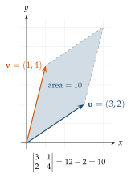
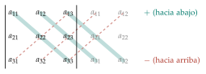
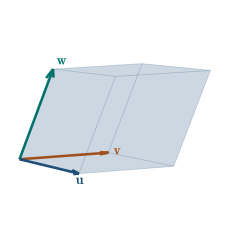
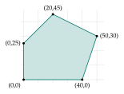

Determinantes
- calcular determinantes de \(2\times2\) y \(3\times3\) (regla de Sarrus);
- calcular determinantes de cualquier tamaño por cofactores y por eliminación;
- usar las propiedades de los determinantes para simplificar cálculos;
- decidir con un determinante si una matriz es invertible;
- resolver sistemas con la regla de Cramer y calcular áreas y volúmenes.
El determinante es un único número que se calcula a partir de una matriz cuadrada y que resume información muy valiosa: dice si la matriz tiene inversa, si un sistema tiene solución única y cuánto cambia el área o el volumen de una figura cuando se le aplica la matriz. Históricamente, los determinantes aparecieron antes que las matrices, justamente para resolver sistemas de ecuaciones.
5.1 Conceptos
5.1.1 Determinante de una matriz de \(2\times2\)
“Producto de la diagonal principal menos producto de la diagonal secundaria.”
Por ejemplo, \(\begin{vmatrix}3&1\\2&4\end{vmatrix}=12-2=10\). Ojo con la notación: las barras verticales \(|\ \ |\) indican determinante, no valor absoluto, y el resultado puede ser negativo.
Si \(\vu\) y \(\vv\) son las columnas de una matriz \(A\) de \(2\times2\), entonces \(\abs{\det A}\) es el área del paralelogramo formado por \(\vu\) y \(\vv\). El signo indica la orientación: positivo si para ir de \(\vu\) a \(\vv\) se gira en sentido antihorario.

5.1.2 Determinante de \(3\times3\): la regla de Sarrus
Para \(A=\begin{pmatrix}a_{11}&a_{12}&a_{13}\\a_{21}&a_{22}&a_{23}\\a_{31}&a_{32}&a_{33}\end{pmatrix}\),

La regla de Sarrus solo funciona para matrices de \(3\times3\). Para \(4\times4\) o más hay que usar cofactores o eliminación.
5.1.3 Desarrollo por cofactores
Sea \(A\) una matriz de \(n\times n\).
- El menor \(M_{ij}\) es el determinante de la matriz que queda al borrar la fila \(i\) y la columna \(j\).
- El cofactor es \(C_{ij}=(-1)^{i+j}M_{ij}\). El signo \((-1)^{i+j}\) sigue un patrón de tablero de ajedrez: \(\begin{pmatrix}+&-&+&\cdots\\-&+&-&\cdots\\+&-&+&\cdots\\ \vdots&&&\ddots\end{pmatrix}\).
El determinante se puede calcular desarrollando por cualquier fila \(i\) o cualquier columna \(j\):
La clave práctica: conviene elegir la fila o columna con más ceros, porque cada cero elimina un término.
5.1.4 Propiedades de los determinantes
Sea \(A\) una matriz de \(n\times n\).
- \(\det(A\T)=\det A\). (Todo lo que se diga de filas vale también para columnas.)
- Si se intercambian dos filas, el determinante cambia de signo.
- Si se multiplica una fila por \(c\), el determinante queda multiplicado por \(c\).
- Si a una fila se le suma un múltiplo de otra, el determinante no cambia.
- Si \(A\) tiene una fila de ceros, o dos filas iguales o proporcionales, \(\det A=0\).
- Si \(A\) es triangular (o diagonal), \(\det A\) es el producto de la diagonal.
- \(\det(AB)=\det A\cdot\det B\), \(\det(cA)=c^n\det A\) y \(\det(A\inv)=\dfrac{1}{\det A}\).
Las propiedades 2, 3, 4 y 6 dan el método más rápido para matrices grandes: escalonar la matriz con Gauss (llevándole la cuenta a los cambios) y multiplicar la diagonal. Así es como lo calculan los computadores.
5.1.5 Determinante e invertibilidad
Para una matriz cuadrada \(A\), las siguientes afirmaciones son equivalentes:
- \(\det A\neq0\);
- \(A\) es invertible;
- el sistema \(A\vx=\vb\) tiene solución única para cada \(\vb\);
- el sistema homogéneo \(A\vx=\cero\) solo tiene la solución trivial.
Geométricamente, \(\det A=0\) significa que las columnas de \(A\) forman un paralelogramo “aplastado” (de área cero): los vectores están sobre una misma recta.
5.1.6 La regla de Cramer
Si \(A\) es de \(n\times n\) con \(\det A\neq0\), la solución de \(A\vx=\vb\) es
donde \(A_i\) es la matriz \(A\) con la columna \(i\) reemplazada por \(\vb\).
5.1.7 Volumen en el espacio

Tres vectores \(\vu,\vv,\vw\) de \(\R^3\) forman un paralelepípedo (una “caja inclinada”). Su volumen es
el valor absoluto del determinante de la matriz que tiene a los tres vectores como columnas. Si \(V=0\), los tres vectores están en un mismo plano.
Si \(\det A=5\) y \(A\) es de \(3\times3\), ¿cuánto vale \(\det(2A)\)? ¿Es invertible \(A\)?
Ver respuesta
5.2 Cómo utilizar los conceptos
- \(2\times2\): fórmula \(ad-bc\).
- \(3\times3\) con números “cómodos”: regla de Sarrus.
- Fila o columna con muchos ceros: desarrollo por cofactores a lo largo de ella.
- Matrices grandes o triangulares: escalonar y multiplicar la diagonal (recordando los cambios de signo por intercambios).
- Antes de calcular, mira si hay filas o columnas proporcionales: en ese caso el determinante es \(0\).
- Elige la fila (o columna) con más ceros.
- Para cada entrada no nula \(a_{ij}\) de esa fila: tapa su fila y su columna, calcula el determinante que queda (\(M_{ij}\)) y ponle el signo del tablero \((-1)^{i+j}\).
- Suma los productos \(a_{ij}C_{ij}\).
- Calcula \(D=\det A\). Si \(D=0\), Cramer no se aplica (usa Gauss).
- Para cada incógnita \(x_i\), reemplaza la columna \(i\) de \(A\) por \(\vb\) y calcula \(D_i\).
- \(x_i=D_i/D\). Comprueba en las ecuaciones originales.
- Olvidar los signos \((-1)^{i+j}\) de los cofactores.
- Creer que \(\det(A+B)=\det A+\det B\): es falso en general.
- Pensar que \(\det(2A)=2\det A\): en realidad es \(2^n\det A\).
- Al escalonar, multiplicar una fila por un número y no compensar en el determinante.
5.3 Ejemplos resueltos
Calcula \(\det A\) para \(A=\begin{pmatrix}2&1&3\\0&-1&4\\1&2&0\end{pmatrix}\).
Solución.
Diagonales hacia abajo: \(2(-1)(0)+1\cdot4\cdot1+3\cdot0\cdot2=0+4+0=4\).
Diagonales hacia arriba: \(3(-1)(1)+2\cdot4\cdot2+1\cdot0\cdot0=-3+16+0=13\).
Entonces \(\det A=4-13=-9\).
Calcula \(\det A\) para \(A=\begin{pmatrix}1&0&2&0\\3&1&0&2\\0&0&4&0\\2&0&1&3\end{pmatrix}\).
Solución. La fila 3 tiene un solo número no nulo, \(a_{33}=4\), con signo \((-1)^{3+3}=+\). Borrando fila 3 y columna 3:
Ese determinante de \(3\times3\) se desarrolla por la primera fila (dos ceros): \(1\cdot\begin{vmatrix}1&2\\0&3\end{vmatrix}=3\). Por lo tanto, \(\det A=4\cdot3=12\).
Calcula \(\det\begin{pmatrix}1&2&3\\2&5&7\\-1&1&4\end{pmatrix}\).
Solución. Las operaciones del tipo “sumar un múltiplo de otra fila” no cambian el determinante:
¿Para qué valores de \(k\) la matriz \(A=\begin{pmatrix}1&2&3\\2&k&6\\1&1&k\end{pmatrix}\) no tiene inversa?
Solución. Desarrollando por la primera fila:
\(A\) no es invertible exactamente cuando \(\det A=0\), es decir, para \(k=3\) o \(k=4\).
Resuelve \(\sistema{x+y+z=6\\x-y+2z=5\\2x+y-z=1}\).
Solución. \(D=\begin{vmatrix}1&1&1\\1&-1&2\\2&1&-1\end{vmatrix}=7\), \(D_x=\begin{vmatrix}6&1&1\\5&-1&2\\1&1&-1\end{vmatrix}=7\), \(D_y=\begin{vmatrix}1&6&1\\1&5&2\\2&1&-1\end{vmatrix}=14\), \(D_z=\begin{vmatrix}1&1&6\\1&-1&5\\2&1&1\end{vmatrix}=21\).
Así, \(x=7/7=1\), \(y=14/7=2\), \(z=21/7=3\).
Calcula el área del triángulo de vértices \(P=(1,1)\), \(Q=(5,2)\), \(R=(2,6)\).
Solución. \(\overrightarrow{PQ}=(4,1)\) y \(\overrightarrow{PR}=(1,5)\) forman un paralelogramo de área \(\left|\begin{vmatrix}4&1\\1&5\end{vmatrix}\right|=19\). El triángulo es la mitad: área \(=9.5\).
5.4 Aplicaciones en la vida real

Un topógrafo mide con GPS las esquinas de un terreno (en metros). Si los vértices \((x_1,y_1),\dots,(x_n,y_n)\) se recorren en orden antihorario, el área es
Para el terreno de la figura: \(\tfrac12(0+1\,200+1\,650+500+0)=1\,675\ \mathrm{m}^2\). Esta “fórmula de la cordonera” es la que usan los programas de mapas para calcular superficies.
En los cristales (sal, cuarzo, metales) los átomos se ordenan repitiendo una “celda” con forma de paralelepípedo. Si sus aristas son los vectores \(\vu=(3,0,1)\), \(\vv=(1,2,0)\) y \(\vw=(0,1,4)\) (en angstroms), su volumen es
Conociendo el volumen de la celda y la masa de sus átomos, los químicos calculan la densidad del material.
Tres puntos \((x_1,y_1)\), \((x_2,y_2)\), \((x_3,y_3)\) están sobre una misma recta exactamente cuando el triángulo que forman tiene área cero:
Reemplazando el primer punto por uno genérico \((x,y)\), esta misma igualdad da la ecuación de la recta que pasa por los otros dos. Los programas de diseño usan esta prueba para decidir, por ejemplo, si tres puntos de una línea dibujada a mano están “suficientemente alineados”.
En un mercado con dos productos relacionados (por ejemplo, café y azúcar), la oferta y la demanda de cada uno dependen de ambos precios. Igualando oferta y demanda resulta un sistema lineal en los precios \(p_1\), \(p_2\), como \(\sistema{4p_1-p_2=26\\-2p_1+3p_2=2}\). Por Cramer:
Cramer tiene la ventaja de dar una fórmula: los economistas la usan para estudiar cómo cambia el equilibrio cuando cambia un coeficiente.
5.5 Ejercicios de práctica
- 5.1Calcula: a) \(\begin{vmatrix}5&2\\3&4\end{vmatrix}\) b) \(\begin{vmatrix}-1&3\\2&-6\end{vmatrix}\) c) \(\begin{vmatrix}\cos\theta&-\sin\theta\\\sin\theta&\cos\theta\end{vmatrix}\) d) \(\begin{vmatrix}a&b\\a&b\end{vmatrix}\)Ver solución
- 5.2Calcula con la regla de Sarrus: a) \(\begin{vmatrix}1&2&0\\3&-1&4\\2&1&1\end{vmatrix}\) b) \(\begin{vmatrix}2&0&0\\5&3&0\\1&7&-1\end{vmatrix}\)Ver solución
- 5.3Para \(A=\begin{pmatrix}2&-1&3\\0&4&1\\5&2&-2\end{pmatrix}\) calcula \(M_{12}\), \(C_{12}\), \(C_{22}\) y \(\det A\).Ver solución
- 5.4
Sin hacer cálculos, explica por qué cada determinante vale cero:
\[\text{a) }\begin{vmatrix}1&2&3\\0&0&0\\4&5&6\end{vmatrix}\qquad \text{b) }\begin{vmatrix}1&2&3\\4&5&6\\1&2&3\end{vmatrix}\qquad \text{c) }\begin{vmatrix}1&2&3\\2&4&6\\7&8&9\end{vmatrix}\]Ver solución - 5.5Si \(A\) es de \(3\times3\) y \(\det A=4\), calcula \(\det(2A)\), \(\det(A\T)\), \(\det(A\inv)\), \(\det(A^2)\) y el determinante de la matriz que resulta al intercambiar dos filas de \(A\).Ver solución
- 5.6Calcula el área del paralelogramo generado por \(\vu=(2,1)\) y \(\vv=(1,3)\).Ver solución
- 5.7Calcula, eligiendo bien la fila o columna: \(\begin{vmatrix}2&0&1&3\\0&0&-1&0\\1&4&2&5\\3&0&1&1\end{vmatrix}\).Ver solución
- 5.8Calcula por eliminación: \(\begin{vmatrix}1&1&1&1\\1&2&2&2\\1&2&3&3\\1&2&3&4\end{vmatrix}\).Ver solución
- 5.9¿Para qué valores de \(k\) la matriz \(\begin{pmatrix}k&2\\3&k-1\end{pmatrix}\) no es invertible?Ver solución
- 5.10¿Para qué valores de \(k\) es invertible \(\begin{pmatrix}1&1&1\\1&k&1\\1&1&k\end{pmatrix}\)?Ver solución
- 5.11Resuelve por Cramer: \(\sistema{2x+3y=8\\5x-y=3}\).Ver solución
- 5.12Resuelve por Cramer: \(\sistema{2x-y+z=3\\x+y-z=0\\3x+2y+z=10}\).Ver solución
- 5.13Calcula el área del triángulo de vértices \((-2,1)\), \((3,-1)\) y \((1,4)\).Ver solución
- 5.14Calcula el volumen del paralelepípedo generado por \((1,2,0)\), \((0,1,3)\) y \((2,0,1)\).Ver solución
- 5.15Un terreno tiene vértices (en metros, en orden antihorario) \((0,0)\), \((30,0)\), \((40,20)\) y \((10,30)\). Calcula su área.Ver solución
- 5.16a) ¿Están alineados los puntos \((1,2)\), \((3,6)\) y \((-2,-4)\)? b) Usa un determinante para encontrar la recta que pasa por \((1,3)\) y \((4,9)\).Ver solución
- 5.17Para el cifrado de Hill (Aplicación 4.4) se necesita que la clave tenga inversa con entradas enteras, lo que ocurre si \(\det K=\pm1\). ¿Cuáles de estas claves sirven? \(K_1=\begin{pmatrix}3&5\\1&2\end{pmatrix}\), \(K_2=\begin{pmatrix}2&4\\1&2\end{pmatrix}\), \(K_3=\begin{pmatrix}4&3\\3&2\end{pmatrix}\), \(K_4=\begin{pmatrix}2&1\\3&4\end{pmatrix}\).Ver solución
- 5.18Los precios de equilibrio de dos productos cumplen \(\sistema{3p_1-p_2=11\\-p_1+2p_2=3}\). Encuéntralos con la regla de Cramer.Ver solución
- 5.19Una matriz \(A\) transforma cada figura del plano multiplicando su área por \(\abs{\det A}\). Si \(A=\begin{pmatrix}2&1\\1&3\end{pmatrix}\) se aplica a un cuadrado de área 4, ¿cuál es el área de la figura resultante?Ver solución
- 5.20Desafío. a) Usando \(\det(AB)=\det A\det B\), demuestra que \(\det(A\inv)=\dfrac{1}{\det A}\). b) Si \(A^2=A\), ¿qué valores puede tener \(\det A\)?Ver solución
5.6 Solucionario
5.1 Solución del ejercicio 5.1
a) \(20-6=14\) b) \(6-6=0\) c) \(\cos^2\theta+\sin^2\theta=1\) d) \(ab-ba=0\).↑ volver al enunciado5.2 Solución del ejercicio 5.2
a) Abajo: \(-1+16+0=15\); arriba: \(0+4+6=10\); \(\det=5\). b) Triangular: \(2\cdot3\cdot(-1)=-6\).↑ volver al enunciado5.3 Solución del ejercicio 5.3
\(M_{12}=\begin{vmatrix}0&1\\5&-2\end{vmatrix}=-5\), \(C_{12}=(-1)^{3}(-5)=5\), \(C_{22}=+\begin{vmatrix}2&3\\5&-2\end{vmatrix}=-19\). Desarrollando por la primera columna: \(\det A=2\begin{vmatrix}4&1\\2&-2\end{vmatrix}+5\begin{vmatrix}-1&3\\4&1\end{vmatrix}=2(-10)+5(-13)=-85\).↑ volver al enunciado5.4 Solución del ejercicio 5.4
a) Tiene una fila de ceros. b) La fila 1 y la fila 3 son iguales. c) La fila 2 es el doble de la fila 1.↑ volver al enunciado5.5 Solución del ejercicio 5.5
\(\det(2A)=2^3\cdot4=32\); \(\det(A\T)=4\); \(\det(A\inv)=\tfrac14\); \(\det(A^2)=16\); con dos filas intercambiadas: \(-4\).↑ volver al enunciado5.6 Solución del ejercicio 5.6
\(\left|\begin{vmatrix}2&1\\1&3\end{vmatrix}\right|=6-1=5\).↑ volver al enunciado5.7 Solución del ejercicio 5.7
La fila 2 tiene un solo elemento no nulo, \(a_{23}=-1\), con signo \((-1)^{5}=-1\): \(\det=(-1)(-1)\begin{vmatrix}2&0&3\\1&4&5\\3&0&1\end{vmatrix}\). Desarrollando ese por la columna 2: \(4\begin{vmatrix}2&3\\3&1\end{vmatrix}=4(2-9)=-28\). Resultado: \(-28\).↑ volver al enunciado5.8 Solución del ejercicio 5.8
Restando a cada fila la anterior (de abajo hacia arriba) queda triangular con unos en la diagonal: \(\det=1\).↑ volver al enunciado5.9 Solución del ejercicio 5.9
\(k(k-1)-6=k^2-k-6=(k-3)(k+2)=0\): no es invertible si \(k=3\) o \(k=-2\).↑ volver al enunciado5.10 Solución del ejercicio 5.10
\(\det=(k-1)^2\). Es invertible para todo \(k\neq1\).↑ volver al enunciado5.11 Solución del ejercicio 5.11
\(D=-2-15=-17\), \(D_x=-8-9=-17\), \(D_y=6-40=-34\). Así \(x=1\), \(y=2\).↑ volver al enunciado5.12 Solución del ejercicio 5.12
\(D=9\), \(D_x=9\), \(D_y=18\), \(D_z=27\): \((x,y,z)=(1,2,3)\).↑ volver al enunciado5.13 Solución del ejercicio 5.13
Vectores desde \((-2,1)\): \((5,-2)\) y \((3,3)\); \(\begin{vmatrix}5&3\\-2&3\end{vmatrix}=21\). Área \(=10.5\).↑ volver al enunciado5.14 Solución del ejercicio 5.14
\(\left|\begin{vmatrix}1&0&2\\2&1&0\\0&3&1\end{vmatrix}\right|=|1(1-0)-0+2(6-0)|=13\).↑ volver al enunciado5.15 Solución del ejercicio 5.15
\(\tfrac12\left(0+600+(1\,200-200)+0\right)=\tfrac12\cdot1\,600=800\ \mathrm{m}^2\).↑ volver al enunciado5.16 Solución del ejercicio 5.16
a) \(\begin{vmatrix}1&2&1\\3&6&1\\-2&-4&1\end{vmatrix}=0\): sí están alineados (todos cumplen \(y=2x\)). b) \(\begin{vmatrix}x&y&1\\1&3&1\\4&9&1\end{vmatrix}=-6x+3y-3=0\), es decir, \(y=2x+1\).↑ volver al enunciado5.17 Solución del ejercicio 5.17
\(\det K_1=1\) y \(\det K_3=-1\): sirven. \(\det K_2=0\) (no es invertible) y \(\det K_4=5\) (su inversa tiene fracciones): no sirven.↑ volver al enunciado5.18 Solución del ejercicio 5.18
\(D=5\), \(D_1=\begin{vmatrix}11&-1\\3&2\end{vmatrix}=25\), \(D_2=\begin{vmatrix}3&11\\-1&3\end{vmatrix}=20\). Así \(p_1=5\) y \(p_2=4\).↑ volver al enunciado5.19 Solución del ejercicio 5.19
\(\det A=6-1=5\): el área resultante es \(5\cdot4=20\).↑ volver al enunciado5.20 Solución del ejercicio 5.20
a) \(AA\inv=I\Rightarrow\det A\cdot\det(A\inv)=\det I=1\Rightarrow\det(A\inv)=1/\det A\). b) \(\det(A)^2=\det(A^2)=\det A\), luego \(\det A(\det A-1)=0\): \(\det A=0\) o \(\det A=1\).↑ volver al enunciado
¿Terminaste de estudiar este capítulo?